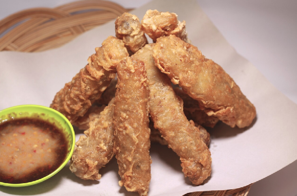

Ngohiong: Cebu's Lumpia

Flavorful deep-fried spring rolls with a twist
Chinese food has heavy influence to Filipino foods and one of them is Ngohiong which is very famous in Cebu.
This food is Cebu's version for lumpia that is cooked, deep-fried with several spices and meat and is paired with flavorful starchy dipping sauce.
The food is cheap and usually available at Cebu's street foods usually found in cowboy style stands near schools or offices
Ingredients
Filling:
- 3-4 cups ubod (julienned)
- 1 medium size singkamas (julienned)
- 1 lb ground pork
- 5 cloves garlic (crushed and minced)
- 1 medium onion (minced)
- 1 bundle green onion (chopped)
- 3 tbsp. ngohiong powder (Chinese five-spice powder)
- cooking oil
- salt and pepper
Wrapping Batter:
- 2 cups cornstarch
- 1 1/2 cup water
- 3 tsp paprika
- 1 tsp white pepper powder
- lumpia wrapper
Ngphiong Dipping Sauce:
- 2 tbsp soy sauce/li>
- 2 tbsp brown sugar
- 1/4 tsp 5-spice powder
- 5 tbsp water
- 1/2 tsp corn flour
- 1 egg white, lightly beaten
Instructions
Filling:
- Saute garlic and onion until fragrant.
- Toss in ground pork and cook until pork turns brownish for about 2 minutes.
- Pour 1/4 cup water. Let it boil and adjust heat to simmer for 10 minutes.
- Sprinkle 5-spice powder, add ubod, singkamas and green onions. Saute for 3 minutes.
- Season with salt and pepper to taste.
- urn off the heat, drain from oil and transfer to a plate. Set aside.
Wrapping Batter:
- Combine all Ingredients except the lumpia wrapper
- Assemble:
- Place 1 to 2 tbsp of filling in the center of wrapper and fold the sides and roll.
- Seal your lumpia by dabbing a little water in the edge of wrapper.
- Frying:
- PHeat 3-4 cups of oil in a shallow sauce pot.
- Dip each lumpia in the wrapping batter and deep fry at medium to low heat for 2-3 minutes or until lumpia turns to golden brown.
Dipping Sauce:
- Combine all sauce ingredients in your smallest saucepan.
- Heat over lowest fire and let it simmer for 2 minutes. Constantly stir until sauce becomes smooth.
- Add the blended egg white. Whisk slowly with a fork to create fine strands of eggs.
- Let it cool and set aside.
Contents of this page are based on the recipe found from here
Back to Main Page